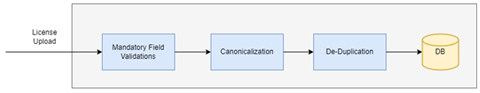
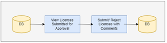
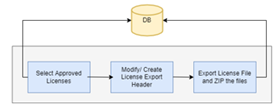
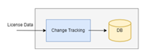
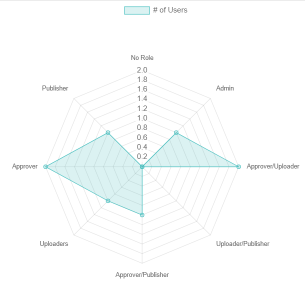
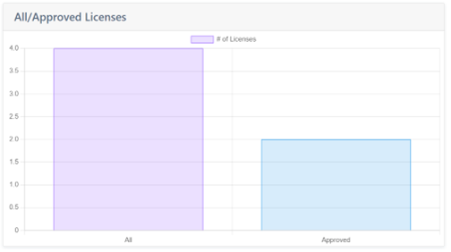

Development
Summary
We developed a Web based Application with a consideration to use open source Technologies. The Application was created on a Three tier architecture with Light front end tier, all business functionality included in the Middle tier and Database as the Data Tier.
- Front end Tier: Front end was developed using the HTML, CSS, JavaScript, jQuery, Boot strap, Chart.js. The images are taken from Adobe stock.
- Middle Tier: the Business logic was developed on Python Django.
- Back End/ Data Layer: SQLite was the database we choose to persist the data.
Modules were created in the application with provisioning the User management, License data management, UI Analytics. Each of the Modules is explained in detail in the below sections.
User Management Module
This module covers the users’ role and users’ maintenance, where we can create, modify, delete user roles and users. We have dedicated roles associated to each functionality in the application. Each Role is associated to multiple functionalities and any user in the system can be associated to more than one Role.
Different Roles in the system are:
- Super User Role: This user is created when we install the application would be the super user. There can be ONLY ONE super user in SPDX Application. Super user creates the first Admin user for the application.
- Admin User Role:
This Role is a privileged Account in SPDX, Admin user can perform all the below tasks in the SPDX Application:
- User Role Maintenance: Create, Modify and Delete User Roles.
- User Maintenance: Create, Modify and Delete Users. Each User in the system would be associated to one or more Roles.
- Super set of Other Roles: Admin User can act as an Uploader, Approver and Publisher which means all the functionalities available for these roles would be available to Admin role as well.
- Override Status: Admin Role has access to all the License data and Status and can change it directly in the system at any point in time. He can override the Process and update the license status.
- Uploader Role:
User with the uploader Role can perform the following actions:
- Upload a new License into the system and submit for approval.
- View all Licenses in the System.
- Modify Licenses which are in status New and Rejected.
- Approver Role:
User with the Approver Role can perform the following actions:
- View all Licenses in the System.
- Approve a New License/ Rejected License that is submitted for approval.
- Publisher Role:
User with the Publisher Role can perform the following actions:
- View all Licenses in the System.
- Publish one or more Approved Licenses in the system.
License Data Management Module
This is core Module which handles the License Management. The Functionalities that are handled by this Module are: -
- License Upload
This Module covers the Functionalities around the License Upload Flow.

The list of processes the new License data goes through are detailed as below. Only when a step is successful, data is passed on to the next step, incase of any validation Error the error is thrown back to the user.- Mandatory Field Validations:
The Mandatory fields in the License entry form are validated here.
- Canonicalization: The requirements are not finalized. We are approaching this problem in two steps as part of this version:
- The license data is simplified according to SPDX License List Matching Guidelines, v2.1 (https://spdx.dev/license-list/matching-guidelines/ ) where Guidelines 3, Guidelines 4, Guidelines 5, Guidelines 8, Guidelines 9 and Guidelines 13 have been implemented.
- De-Duplication: This process checks if the license that is uploaded already exists in the system. The validation is based on the License contents and certain key fields
- Mandatory Field Validations:
The Mandatory fields in the License entry form are validated here.
- License Approve

The list of processes in the License Approval flow is included in this process. User selects the lists of Available licenses for approval, these would include new Licenses submitted for approval OR rejected licenses modified and submitted for approval. - License Publish

This flow includes process to Publish the Approved files in the system. User selects Approved licenses in the system and publishes them. There would be an option to Edit OR Add the Header fields before the data is exported. - Change Tracking

Every change in the License data is tracked in the system. Every action/ change is associated with a change code and the License file with changes in tracked at the database level. There is an UI to check the list of changes that has undergone for each License file.
UI Analytics Module
This module includes all the Analytical reports included in the system. Each user role has access to specific reports. The reports is explained below:

- 
- 